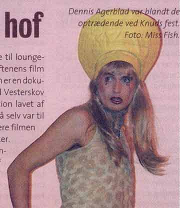

| November 2002 |

| Kong Knud holdte hof | |
| Tekst: | spk |
| Foto: | Jørgen Callesen. |
Omgivet af opkørte transer og avantgarden fra det danske film-miljø holdt fotografen, instruktøren og kunstneren Knud Vesterskov lørdag d. 19. oktober en kombineret 60-års fødselsdag og premiere på den nye dokumentarfilm om ham selv.
Helt i Knuds ånd blev Cinematekets sterile rum omdannet til en lege- og losseplads for akrobatiske og ekshibitionistiske transer på billig fadøl mens det øvrige publikum cirkulerede til loungemusik og drøftede aftenens film "From Scratz". Filmen er en dokumentarfilm om Knud Vesterskov og hans filmproduktion lavet af Bent Stålhøj, der også selv var til stede for at præsentere filmen og hylde Knuds værker.
Søndagen efter kunne de to sætte trumf på ved at hive film festivalens særpris hjem.
Dennis Agerblad var bladt de optrædende ved Knuds fest.

Print denne side